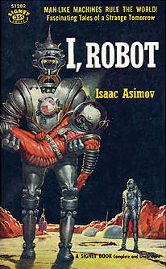

1946
- Electronic Numerical Integrator and Computer
-

ENIAC was amongst the earliest electronic general-purpose computers made. It was Turing-complete, digital and able to solve complex numerical problems through reprogramming. ENIAC was designed and primarily used to calculate artillery firing tables for the United States Army's Ballistic Research Laboratory.
1950
- Asimov’s Three Laws
-

The Three Laws were a set of rules devised by the science fiction author Isaac Asimov. The rules were introduced in his 1942 short story "Runaround." The rules were (1) A robot may not injure a human being or, through inaction, allow a human being to come to harm, (2) A robot must obey the orders given it by human beings except where such orders would conflict with the First Law, (3) A robot must protect its own existence as long as such protection does not conflict with the First or Second Laws.
1956
- Birth of Artificial Intelligence
-

The Dartmouth Summer Research Project on Artificial Intelligence held at Dartmouth University was a 1956 summer workshop held by Dartmouth University and considered by many as the seminal event for artificial intelligence as a field. The proposal for the conference included this assertion: "every aspect of learning or any other feature of intelligence can be so precisely described that a machine can be made to simulate it."
1959
- Development of Computer Checkers
-

Arthur Samuel (IBM) wrote the first game-playing program, for checkers, to achieve sufficient skill to challenge a world champion. Samuel's machine learning programs were responsible for the high performance of the checkers player. He believed teaching computers to play games was very fruitful for developing tactics appropriate to general problems, and he chose checkers as it is relatively simple though has a depth of strategy.
1968
- Shakey the Robot is Created
-
Shakey the Robot was the first general-purpose mobile robot to be able to reason about its own actions. Unlike other robots, Shakey could analyze commands and break them down into basic chunks by itself rather can having to be instructed on each individual step of completing a larger task. Shakey was developed at the Artificial Intelligence Center of Stanford Research Institute (now called SRI International).
1997
- Chess Grandmaster Garry Kasparov loses to IBM’s Deep Blue
-
Deep Blue versus Garry Kasparov was a pair of six-game chess matches between world chess champion Garry Kasparov and an IBM supercomputer called Deep Blue. The first match was played in Philadelphia in 1996 and won by Kasparov. The second was played in New York City in 1997 and won by Deep Blue. The 1997 match was the first defeat of a reigning world chess champion by a computer under tournament conditions.
2010
- IBM creates Watson Computer
-
Watson is a question-answering computer system capable of answering questions posed in natural language, developed in IBM's DeepQA project by a research team led by Ferucci. The computer system was initially developed to answer questions on the quiz show Jeopardy! and, in 2011, the Watson computer system competed on Jeopardy!
2011
- Apple introduces Siri
-

With the unveiling of the new iPhone 4s, Apple introduced the world to Siri, a groundbreaking example of artificial intelligence in action. Siri’s debut represented the culmination of a long-term dream at Apple, an accomplishment predicted in the 1980s and fulfilled almost down to the exact month.
2018
- Alibaba AI beats top students at Stanford
-
Chinese retail giant Alibaba developed an artificial intelligence model that managed to outdo human participants in a reading and comprehension test designed by Stanford University. The model scored 82.44, whereas humans recorded a score of 82.304.